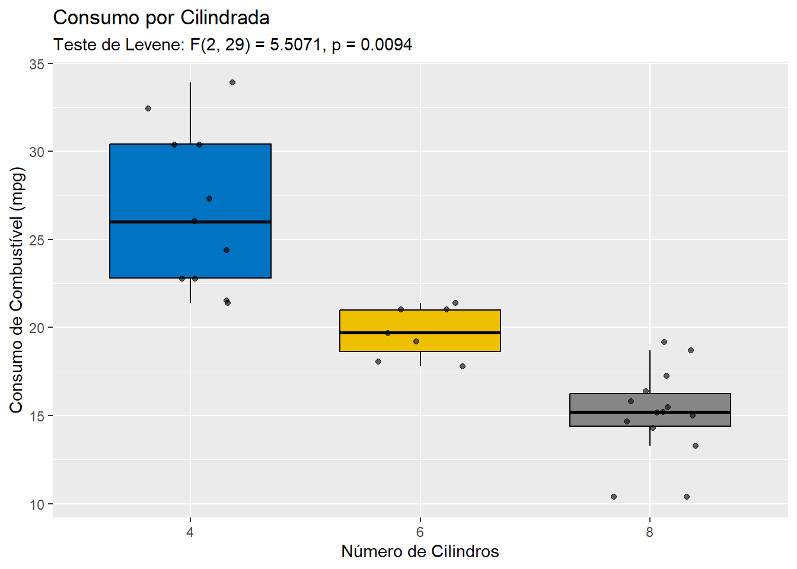
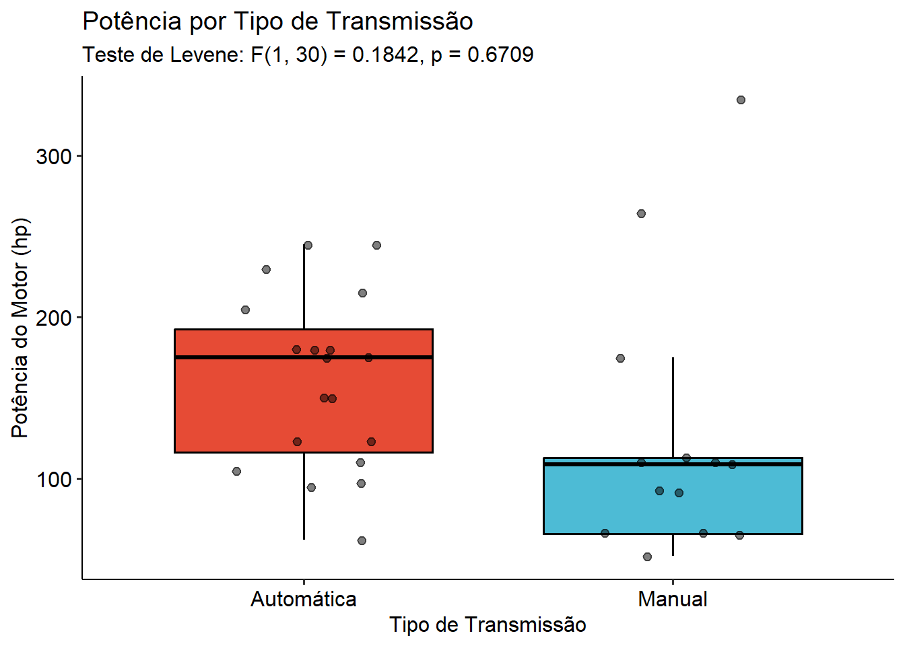
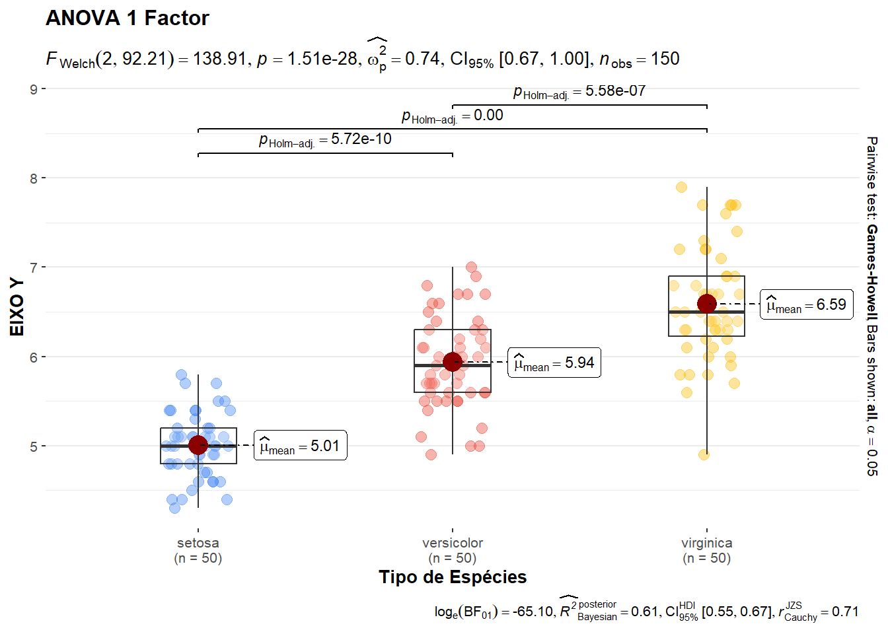

A Análise de Variância (ANOVA) é um dos pilares da inferência estatística clássica. Desenvolvida para contornar as limitações do teste t de Student — que se restringe à comparação de no máximo duas médias, a ANOVA permite avaliar simultaneamente se as médias de três ou mais grupos são estatisticamente diferentes, controlando a taxa de erro do Tipo I (falsos positivos).
4.1 Origem Histórica
A ANOVA foi concebida por Sir Ronald A. Fisher, um dos pais da estatística moderna. O método foi introduzido formalmente em seu livro de 1925, “Statistical Methods for Research Workers”, e expandido em 1935 na obra “The Design of Experiments”.
O desenvolvimento ocorreu na Rothamsted Experimental Station, uma estação de pesquisa agrícola na Inglaterra. Fisher precisava analisar décadas de dados sobre o rendimento de culturas agrícolas submetidas a diferentes combinações de fertilizantes, tipos de solo e sementes.
Fazer múltiplos testes t par a par inflacionaria o erro familiar (\(\alpha_{\text{global}} = 1 - (1 - \alpha)^k\)). A ANOVA surgiu como uma solução elegante para testar todas as médias de uma só vez. Em homenagem a Fisher, a estatística de teste da ANOVA foi denominada F.
4.2 Teste de Hipóteses
A ANOVA testa o efeito de um fator (variável independente categórica) sobre uma variável de desfecho (dependente contínua).
As hipóteses formais para \(k\) grupos são definidas como:
Hipótese Nula (\(H_0\)): \(\mu_1 = \mu_2 = \mu_3 = \dots = \mu_k\)(Todas as médias populacionais dos grupos são iguais; o fator não tem efeito).
Hipótese Alternativa (\(H_1\)): Pelo menos uma média populacional \(\mu_i\) é diferente das demais.(O fator exerce efeito significativo no desfecho).
4.3 Pressupostos Fundamentais
A validação matemática da ANOVA paramétrica exige o cumprimento estrito de três pressupostos biométricos e estatísticos:
Independência das Observações: Os dados dentro de cada grupo e entre os grupos devem ser independentes. Depende do desenho amostral (ex: amostragem aleatória).
Normalidade dos Resíduos: Os desvios dos dados em relação à média do seu respectivo grupo devem seguir uma distribuição normal (\(e_{ij} \sim N(0, \sigma^2)\)). Avalia-se por testes como Shapiro-Wilk ou gráficos Q-Q.
Homocedasticidade (Homogeneidade de Variâncias): A variabilidade interna de cada grupo deve ser estatisticamente equivalente (\(\sigma_1^2 = \sigma_2^2 = \dots = \sigma_k^2\)). Avalia-se pelos testes de Levene ou Bartlett.
A lógica da ANOVA consiste em decompor a variabilidade total dos dados em duas fontes: a variabilidade entre os grupos (causada pelo tratamento) e a variabilidade dentro dos grupos (o erro aleatório ou resíduo).
4.3.1Passo 1: Calcular as Somas dos Quadrados (\(SQ\))
Seja \(N\) o número total de observações, \(k\) o número de grupos, \(n_i\) o tamanho do grupo \(i\), e \(\bar{Y}_{\dots}\) a média global.
Soma dos Quadrados Total (\(SQ_T\)): Variabilidade total do experimento.
\(k\): Número de grupos/tratamentos sendo comparados.
\(N\): Número total de observações na amostra completa.
Soma dos Quadrados (\(SQ\)): Medida da variabilidade (distância dos pontos em relação à média).
Quadrado Médio (\(QM\)): A estimativa da variância de fato (Soma dos Quadrados dividida pelos seus respectivos graus de liberdade).
Estatística \(F\): A razão que dita o teste. Se o \(QM_{\text{Entre}}\) for muito maior que o \(QM_{\text{Dentro}}\) (erro), o valor de \(F\) será alto, jogando o valor-\(p\) para baixo de 0,05 e rejeitando a hipótese nula.
4.4 Teste de Levene (Homocedasticidade)
Desenvolvido por Howard Levene em 1960, este teste avalia se as variâncias dos \(k\) grupos são homogêneas (homocedasticidade). Ao contrário do teste de Bartlett, o Levene é menos sensível a desvios da normalidade, tornando-o ideal como pré-requisito da ANOVA.
\(H_1:\) Pelo menos uma variância é diferente das demais.
O teste calcula a distância absoluta (ou quadrada) de cada ponto em relação à mediana (ou média) do seu grupo: \(Z_{ij} = |Y_{ij} - \tilde{Y}_{i\cdot}|\). Depois, aplica-se uma ANOVA convencional sobre esses desvios \(Z_{ij}\).
4.5 Aplicações da ANOVA
Code
library(car)library(performance)# 1. Preparar os dados: Transformar 'cyl' em fatordados_mtcars<-mtcarsdados_mtcars$cyl<-as.factor(dados_mtcars$cyl)# -------------------------------------------------------------# Abordagem A: Usando o pacote clássico 'car'# -------------------------------------------------------------teste_levene_car<-car::leveneTest(mpg~cyl, data =dados_mtcars, center =median)print(teste_levene_car)
Levene's Test for Homogeneity of Variance (center = median)
Df F value Pr(>F)
group 2 5.5071 0.00939 **
29
---
Signif. codes: 0 '***' 0.001 '**' 0.01 '*' 0.05 '.' 0.1 ' ' 1
Code
# -------------------------------------------------------------# Abordagem B: Usando o ecossistema 'easystats' (Mais moderno)# -------------------------------------------------------------# O check_homogeneity já aplica o Levene automaticamente para ANOVAteste_homogeneidade<-performance::check_homogeneity(lm(mpg~cyl, data =dados_mtcars))print(teste_homogeneidade)
Warning: Variances differ between groups (Bartlett Test, p = 0.015).
Code
library(ggplot2)library(ggpubr)library(car)# 1. Preparar os dados (garantir que 'cyl' é um fator)dados_mtcars<-mtcarsdados_mtcars$cyl<-as.factor(dados_mtcars$cyl)# 2. Executar o Teste de Levene nos bastidoreslevene_res<-car::leveneTest(mpg~cyl, data =dados_mtcars, center =median)# 3. Extrair os valores estatísticos para automatizar o textof_val<-round(levene_res$`F value`[1], 4)p_val<-round(levene_res$`Pr(>F)`[1], 4)df_num<-status<-levene_res$Df[1]df_den<-status<-levene_res$Df[2]# Criar a string formatada para o gráficotexto_levene<-paste0("Teste de Levene: F(", df_num, ", ", df_den, ") = ", f_val, ", p = ", p_val)# 4. Construir o gráfico usando as funções do ggpubrggboxplot(dados_mtcars, x ="cyl", y ="mpg", fill ="cyl", palette ="jco", # Paleta de cores limpa estilo Journal of Clinical Oncology add ="jitter", # Adiciona os pontos reais sobre o boxplot add.params =list(size =1.5, alpha =0.6), error.plot ="upper_errorbar")+theme_gray()+# Tema científico e minimalista do ggpubrlabs( title ="Consumo por Cilindrada", subtitle =texto_levene, # Injeta os resultados do Levene aqui x ="Número de Cilindros", y ="Consumo de Combustível (mpg)")+theme(legend.position ="none")# Remove a legenda lateral pois o eixo X já identifica os grupos

Code
library(ggplot2)library(ggpubr)library(car)# 1. Preparar os dados e customizar os rótulos do fatordados_novos<-mtcarsdados_novos$am<-factor(dados_novos$am, levels =c(0, 1), labels =c("Automática", "Manual"))# 2. Executar o Teste de Levene para Potência (hp) em função da Transmissão (am)levene_hp<-car::leveneTest(hp~am, data =dados_novos, center =median)# 3. Extrair as métricas estatísticasf_val<-round(levene_hp$`F value`[1], 4)p_val<-round(levene_hp$`Pr(>F)`[1], 4)df_num<-levene_hp$Df[1]df_den<-levene_hp$Df[2]# Formatar o texto que irá para o gráficotexto_levene_hp<-paste0("Teste de Levene: F(", df_num, ", ", df_den, ") = ", f_val, ", p = ", p_val)# 4. Construir o gráfico customizado com ggpubrggboxplot(dados_novos, x ="am", y ="hp", fill ="am", palette ="npg", # Cores da paleta Nature Publishing Group add ="jitter", # Adiciona os pontos reais add.params =list(size =2, alpha =0.5, color ="black"), error.plot ="upper_errorbar")+theme_pubr()+# Tema científico limpolabs( title ="Potência por Tipo de Transmissão", subtitle =texto_levene_hp, # Injeta o resultado dinâmico do teste x ="Tipo de Transmissão", y ="Potência do Motor (hp)")+theme(legend.position ="none")# Oculta a legenda redundante

No primeiro script, analisou-se o peso dos veículos (wt) em função do número de cilindros (cyl como fator). Como o parâmetro foi definido como type = “nonparametric”, o R ignorou a restrição de normalidade e executou o Teste de Kruskal-Wallis.
O segundo bloco executa uma ANOVA de um fator clássica (type = “parametric”), avaliando o comprimento da sépala (Sepal.Length) entre três espécies de flores (Species: setosa, versicolor, virginica).
O Gráfico Estatístico: O ggbetweenstats plota simultaneamente a distribuição dos dados e os resultados inferenciais no topo do gráfico. Ele exibe a estatística \(F(\text{df}_{\text{num}}, \text{df}_{\text{den}}) = F_{\text{calculado}}\), acompanhada do valor-\(p\) e do tamanho do efeito (\(\omega^2\) ou \(\eta^2\)).
Code
library(ggstatsplot)ggstatsplot::ggbetweenstats(data =iris, title ="ANOVA 1 Factor", xlab ="Tipo de Espécies", ylab ="EIXO Y", x =Species, y =Sepal.Length, type ="parametric", conf.level =0.95, pairwise.display ="all", p.adjust.method ="holm", violin.args =list(width =0))

Comparações Múltiplas (Post-Hoc): O argumento pairwise.display = “all” aciona o teste de comparação múltipla corrigido pelo método de Holm. Como a ANOVA é um teste global (omni-teste), ela diz se há diferença, mas não onde. As barras superiores geradas pelo pacote revelam exatamente quais pares de espécies diferem entre si. Se todas exibirem \(p_{\text{adj}} < 0,05\), conclui-se que as três espécies possuem médias de comprimento de sépala estatisticamente distintas.
O último bloco aplica uma modelagem avançada utilizando type = “robust” baseada no método de médias aparadas (trimmed means) de Wilcox. Essa técnica é crucial quando há violações moderadas de homocedasticidade ou presença de outliers que distorceriam a média aritmética convencional.
O gráfico de cristas (geom_density_ridges2) combinado com points_sina exibe a real densidade probabilística de cada espécie. A linha vertical interna representa a mediana (devido ao argumento quantiles = 2). O espalhamento horizontal dos pontos individuais (jittered_points) permite ao pesquisador validar visualmente a variância de cada grupo enquanto observa a estatística robusta calculada no topo, conferindo extrema transparência metodológica à análise visualizada.
Code
library(ggplot2)library(ggridges)library(statsExpressions)# Garantindo a semente para a reprodução do método "robust"set.seed(123)results_data<-statsExpressions::oneway_anova( data =iris, x =Species, y =Sepal.Length, type ="robust")ggplot2::ggplot(iris, aes(x =Sepal.Length, y =Species, fill =Species))+# Mapeando a cor por espécieggridges::geom_density_ridges2( quantile_lines =TRUE, quantiles =2, # Linha da mediana scale =1, jittered_points =TRUE, position ="points_sina", alpha =0.7# Adicionado para dar transparência aos pontos atrás)+ggridges::theme_ridges()+ggplot2::theme_gray(base_size =12)+ggplot2::theme(legend.position ="none")+# Remove legenda redundanteggplot2::labs( title ="ANOVA 1 FACTOR (Robust)", subtitle =results_data$expression[[1]]# Renderiza a expressão matemática rica)